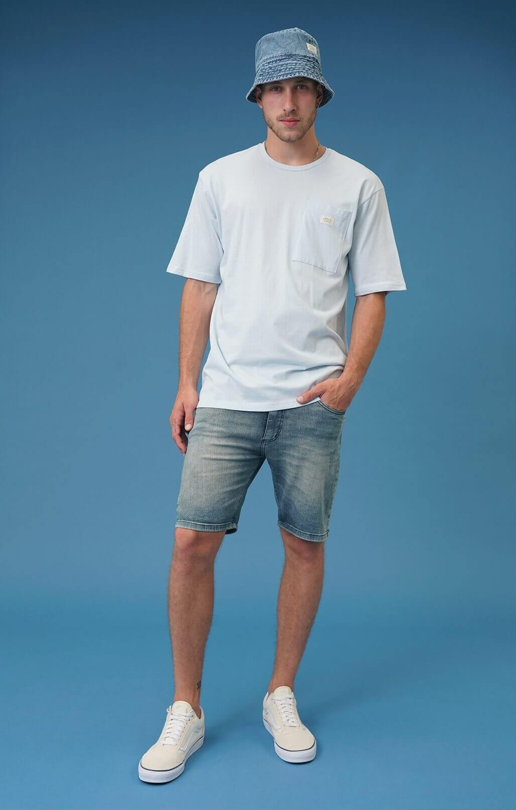
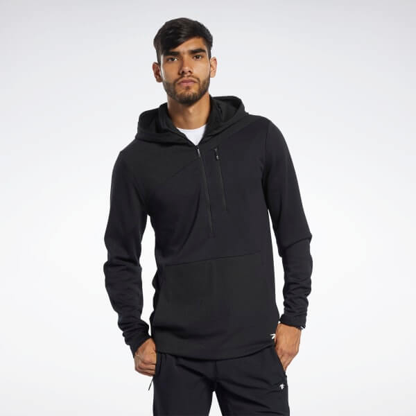
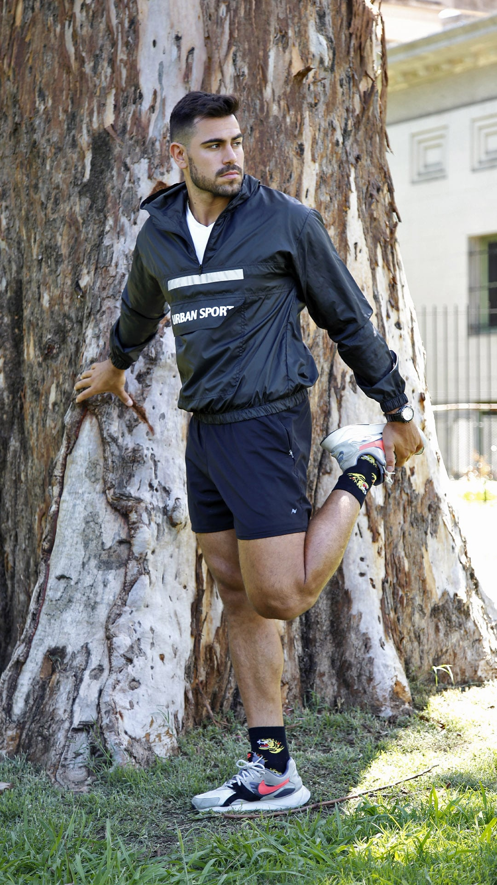

Pesquero Batuk
Gorro pesquero hecho de tela jean de primera calidad, este esta muy de moda en este verano 2022 tambien tenemos otros tonos de jeans.

Campera Preta
Campera importada de Brasil muy conocida y muy utilizada dentro del pueblo brasilero, esta hecha de algodón rustico para brindarte mayor frescura
Negro Levis
Remera de la marca Levis con algodón de los estados unidos lo cual te ayudara a que el color de la prende perdure por mucho tiempo

Campera deportiva Urban Sport
Campera rompeviento perfecto para andar en bici para para comenzar el calentamiento en los ejercicios que hagas.